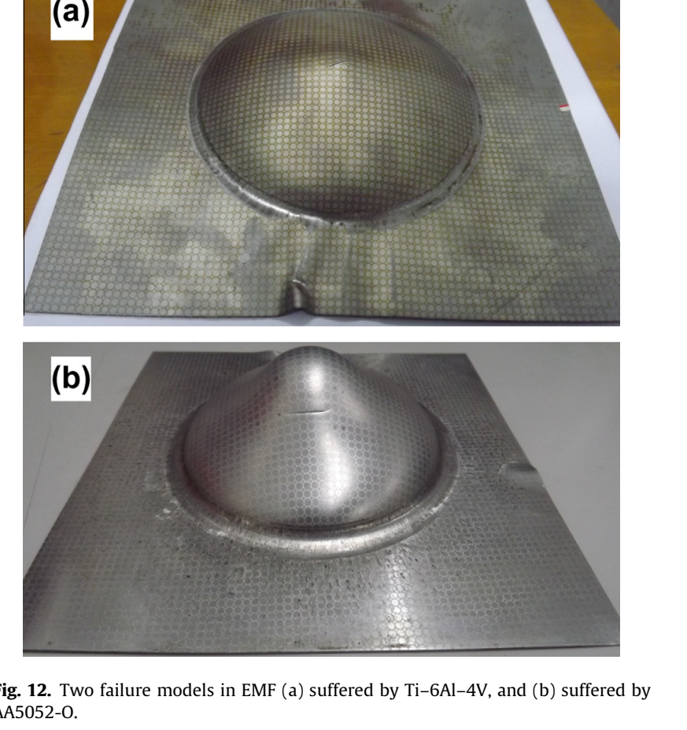

Journal article
Formability of Ti–6Al–4V titanium alloy sheet in magnetic pulse bulging
Research at a glance
{kind=link}

Abstract
In order to investigate the formability of Ti–6Al–4V titanium alloy sheet in high speed forming process, electromagnetic forming (EMF) namely magnetic pulse forming with an Al driver sheet is performed experimentally. Formability under EMF is compared with that in quasi static condition. Fracture analysis for the titanium alloy Ti–6Al–4V is then carried out to study the fracture mechanism and material response. Results indicate that the formability undergoing EMF process with a driver sheet is increased beyond that exhibited in quasi-static tests. In electromagnetic free bulging, the forming limit of Ti–6Al–4V increases by 24.37%, which is more optimistic than AA5052-O. Fractography analysis using SEM determines that the Ti–6Al–4V titanium alloy sheet fails in a combination of ductile fracture and shear fracture when subjected to the electromagnetic bulging process while only ductile fracture develops in quasi-static condition.
Keywords
Recommended citation
Fen-Qiang Li, Jian-Hua Mo, Jian-Jun Li, Liang Huang, and Hai-Yang Zhou (2013). Formability of Ti–6Al–4V titanium alloy sheet in magnetic pulse bulging. Materials & Design, 52, 337–344. https://doi.org/10.1016/j.matdes.2013.05.064